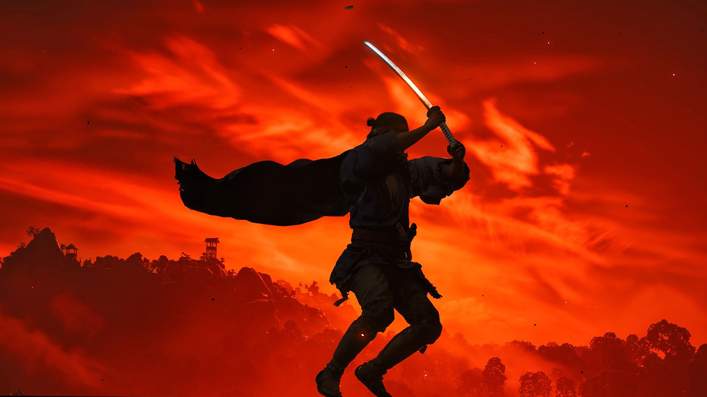

GAMEHUB is a Non-Profit website that suites no real purpose but to offer our sincere opinions and general knowledge.
This website was created with the goal of sharing our experience with some of our favorite games from Ghost of Tsushima, which is now available on Ps5 format, to the more well known of the souls games, 2 of them being available in the Ps5 format. We were inspired by other better review sites, which between you and me theirs is clearly better, to create this opinion based website.
 |
 |